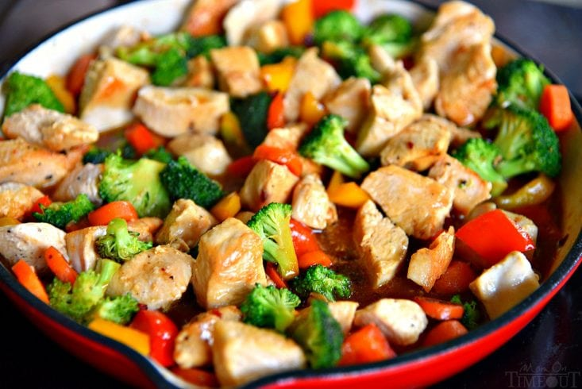

Stir Fry Sauce
Homepage

Description
Sweet and savory sauce for any stir fry.
Ingredients
- 1 tbsp corn starch
- 2 tbsp cold water
- 1/4 cup low sodium chicken broth
- 3 tbsp low sodium soy sauce
- 1/4 cup honey
- 1 tbsp toasted sesame oil
- 1/2 tsp crushed red pepper flakes
Steps
- Whisk together corn starch and water.
- Add remaining ingredients and mix.
- Sauce will thicken when boiled with stir fry.